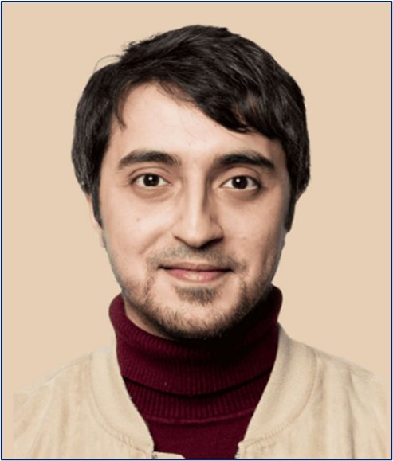
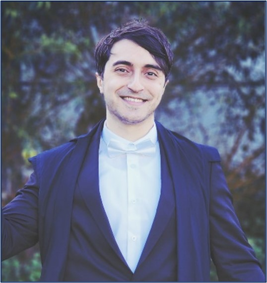

 Intro— Mohanad Alkhodari is a 2nd year DPhil student of Medical Sciences (AI in Cardiology) at the Cardiovascular Clinical Research Facility (CCRF), Radcliffe Department of Medicine, University of Oxford, United Kingdom. He is also a research associate in cardiovascular engineering with 5 years of experience at the Healthcare Engineering Innovation Centre, Department of Biomedical Engineering, Khalifa University (KU), United Arab Emirates (UAE). Education/scholarships— Alkhodari has led the establishment of the first-ever Oxford-Khalifa studentship for outstanding academics and researchers, and he was the first recipient of this award to cover all tuition fees and living expenses during the 3-year course of study at Oxford. In 2019, he received his Master of Science (MS) degree (top 5-10%) in Biomedical Engineering (medical imaging) from American University of Sharjah (AUS), UAE. In 2017, he received his Bachelor of Science (BS) degree (Hons.) in Electrical Engineering (biosignals/bioimaging) from Abu Dhabi University (ADU), UAE. While pursuing his graduate MS degree at AUS, Alkhodari was a graduate teaching/research assistant (GTA/GRA) at the College of Engineering, where he was awarded a full (100%) scholarship from the Bioengineering and Biosciences Research Institute (BBRI) at the university for his academic excellence in the undergraduate studies. He was also a representative of the electrical and biomedical engineering graduate programs for the IEEE Engineering in Medicine and Biology Society (EMBS) students’ chapter at AUS. Furthermore, Alkhodari was awarded a partial scholarship (50%) to pursue the undergraduate BS degree at ADU. Work experience— Alongside his main research position at KU for the last 5 years, Alkhodari held part-time research appointments for 3 years at the Department of Computer Science and Engineering of AUS and at the Department of Electrical and Computer Engineering of ADU. While pursuing his MS degree, he had a practical training in biomedical engineering at Specialized Rehabilitation Hospital and Health Shield Medical Centre of Capital Health, Abu Dhabi, UAE. Moreover, he had a research internship at the Institute Centre for Microsystems (iMicro) at KU during his undergraduate studies. Research interests— Alkhodari’s research focuses on developing artificial intelligence tools to leverage personalised healthcare in clinical practice, mostly for cardiovascular assessment. His current research interests include machine/deep learning, biosignals and bioimaging, and healthcare informatics. The ultimate goal of his DPhil. project is to understand the hypertension progression landscape over life course with the help of evolutionary AI-based models and multi-organ multi-modality data using big databases including the UK Biobank. Publications— By far, he authored and co-authored 3 book chapters and more than 40 scientific papers in international journals and conferences, where he was the first/leading/corresponding/presenting author in majority of them. He has one US patent currently under-review. Alkhodari is an associate editor at PLoS ONE, and an active reviewer for many reputable journals including IEEE JBHI and Frontiers in Physiology. Grants Alkhodari has received a funding grant of 19,000$ from Khalifa Innovation Centre with incubation support after excellence in pitching his startup project. He has received the 2023 IEEE BIBM student travel grant of 800$ for excellence in his DPhil project idea. He has also received a research grant of 2,750$ while supervising a PhD student from the 3rd Forum for Women in Research in 2022 for excellence in project idea.  Awards— Alkhodari has won awards at every stage of his career. He was selected as an awardee of the 2023 MIT Technology Review Innovators Under 35 from the MENA region for his DPhil project idea. Moreover, he was awarded the 1st place at the 2019 UAE Ministry of Health and Prevention (MOHAP) innovations in health hackathon for a group design of a smart wearable cap for epileptic patients. Furthermore, he was awarded the 1st place at the 2017 Undergraduate Research Competition (URC) for GCC countries held at ADU for his BS graduation project idea. Alkhodari has participated at the PhysioNet/Computing in Cardiology Challenges for three consecutive years; where he was awarded the 4th place in 2022. Extracurricular— Besides his regular supervision and assistance to fresh/junior biomedical engineering researchers at KU, Alkhodari supervised 2 PhD. students in dissertation-related research, 1 MS student in thesis project, 6 MS groups in course project activities, and 2 BS groups on their Senior Design Project (SDP). He worked closely alongside PhD. students and postdoctoral researchers at international universities in Greece and Japan in collaborative research projects. Others— Alkhodari spends his free time doing sports/gym. He enjoys graphic designing, drawing, and taking care of his two bunnies.